Praktikum 7: ListView, GridView, dan Asset Management
A. Pendahuluan
Dalam pembuatan aplikasi mobile, tampilan atau User Interface memiliki peran yang sangat penting karena memengaruhi kenyamanan dan kemudahan pengguna saat menggunakan aplikasi. Flutter menyediakan beragam widget yang dapat digunakan untuk membuat tampilan yang lebih hidup dan dinamis. Salah satunya adalah ListView, yang dipakai untuk menampilkan data secara berurutan dalam bentuk daftar, serta GridView, yang menampilkan data dalam susunan kotak atau kisi. Selain itu, Flutter juga memungkinkan pengembang memanfaatkan berkas lokal seperti gambar dan jenis huruf khusus (custom font), termasuk menampilkan gambar yang diambil langsung dari internet. Jika komponen-komponen tersebut digabungkan secara tepat, tampilan aplikasi dapat menjadi lebih rapi, menarik, dan mudah dipahami oleh pengguna. Penggunaan ListView atau GridView dengan konstruktor .builder juga dapat membantu aplikasi menampilkan daftar panjang secara lebih efisien.
Selain tampilan, Flutter juga menggunakan konsep state management untuk mengatur perubahan data serta kondisi tampilan ketika aplikasi sedang berjalan. Salah satu cara pengelolaan state adalah ephemeral state, yaitu data atau kondisi yang hanya digunakan pada bagian tertentu dari aplikasi dan tidak perlu dibagikan ke seluruh aplikasi. Contohnya adalah tab yang sedang dipilih, halaman aktif, atau progres animasi. Di sisi lain, ChangeNotifier dapat digunakan agar perubahan data dapat diketahui oleh widget lain yang membutuhkan data tersebut. Ketika data berubah, widget yang terhubung akan diperbarui sehingga tampilan aplikasi tetap sesuai dengan informasi terbaru.
B. Tujuan
Tujuan dari praktikum ini adalah:
- Menambahkan gambar dan font khusus ke dalam proyek dengan mendaftarkannya pada file pubspec.yaml
- Mengambil dan menampilkan gambar langsung dari internet menggunakan Image.network, lengkap dengan tampilan pemuatan saat gambar belum selesai dimuat dan tampilan kesalahan bila gambar gagal ditampilkan.
- Menyusun dan menampilkan data dalam bentuk daftar memakai ListView.builder maupun dalam bentuk kotak-kotak memakai GridView.builder.
- Mengubah tampilan antara mode daftar dan mode kisi menggunakan state lokal melalui setState, tanpa memengaruhi data favorit yang dikelola oleh Provider.
C. Isi
Bagian A — Asset Gambar dan Custom Font
1. Menyiapkan Folder Assets
Di folder utama project (sejajar dengan folder lib, bukan di dalamnya), buat folder assets beserta dua subfolder. Bisa melalui Explorer VS Code, atau melalui terminal:
mkdir assets
mkdir assets/images
mkdir assets/fontsPenjelasan: Codingan diatas tersebut berfungsi untuk menyiapkan struktur direktori aset di dalam folder utama proyek aplikasi yang posisinya sejajar dengan folder lib. Baris pertama menciptakan folder induk bernama assets, sedangkan dua baris berikutnya membentuk dua subfolder di dalamnya, yaitu folder images untuk menyimpan berkas gambar seperti logo beserta gambar placeholder, dan folder fonts untuk menampung berkas jenis huruf kustom seperti Poppins.
2. Mendaftarkan Asset dan Font di pubspec.yaml
Buka pubspec.yaml. Cari bagian flutter: di bagian bawah file, lalu ubah sehingga menjadi seperti berikut.
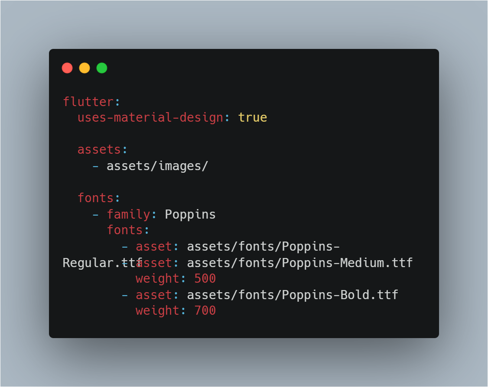
Penjelasan: Konfigurasi pada berkas pubspec.yaml tersebut berfungsi untuk mendaftarkan sumber daya gambar dan jenis huruf kustom agar dikenali dan dibundel ke dalam aplikasi Flutter. Penulisan jalur assets/images/ dengan tanda garis miring di bagian akhir secara otomatis mendaftarkan seluruh berkas gambar di dalam folder tersebut sekaligus tanpa perlu ditulis satu per satu. Sementara itu, bagian fonts mendaftarkan keluarga huruf bernama Poppins beserta pemetaan tingkat ketebalan untuk tiap berkas font, yaitu Poppins-Regular.ttf sebagai ketebalan normal bawaan, Poppins-Medium.ttf dengan bobot 500, dan Poppins-Bold.ttf dengan bobot 700 agar dapat diterapkan pada tema aplikasi.
Setelah itu jalankan flutter pub get pada terminal
3. Memasang Font di Tema Aplikasi
Di lib/main.dart, tambahkan fontFamily pada theme dan darkTheme di MaterialApp.
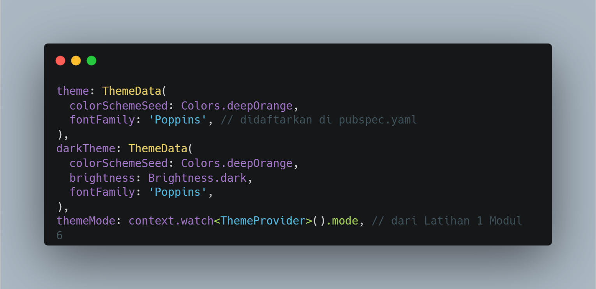
Penjelasan: Potongan kode pada berkas lib/main.dart tersebut berfungsi untuk menerapkan jenis huruf kustom Poppins yang telah didaftarkan di pubspec.yaml ke seluruh teks di dalam aplikasi. Penambahan properti fontFamily: 'Poppins' dilakukan pada kedua konfigurasi tema, yakni theme untuk mode terang dan darkTheme untuk mode gelap di dalam widget MaterialApp. Dengan demikian, tipografi aplikasi tetap konsisten menggunakan font Poppins baik saat pengguna memakai tema terang maupun saat beralih ke tema gelap melalui pengaturan.
4. Logo di AppBar
Di lib/pages/home_page.dart, ganti parameter title pada AppBar menjadi Row berisi logo dan teks.
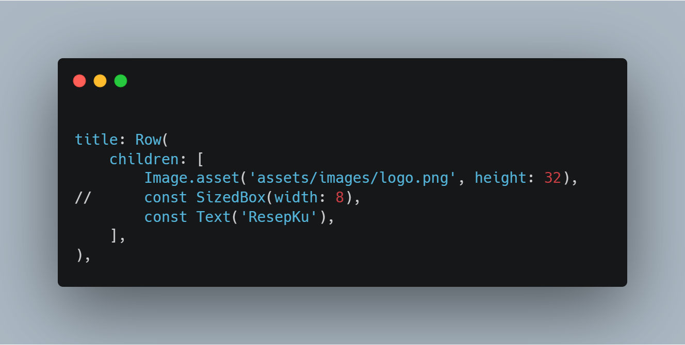
Penjelasan: Code diatas pada berkas lib/pages/home_page.dart tersebut berfungsi untuk menampilkan logo aplikasi bersanding dengan judul di bagian atas halaman utama. Parameter title pada widget AppBar diubah menjadi widget Row yang menyusun elemen secara horizontal, dimulai dari gambar logo lokal melalui Image.asset('assets/images/logo.png', height: 32), diikuti jarak pemisah selebar 8 piksel menggunakan SizedBox, lalu diakhiri dengan teks judul 'ResepKu'.
Checkpoint 1
Tampilan Checkpoint 1 menunjukkan halaman utama aplikasi ResepKu yang berhasil menerapkan font kustom Poppins dan menampilkan logo aplikasi di AppBar bersanding dengan judul teks.
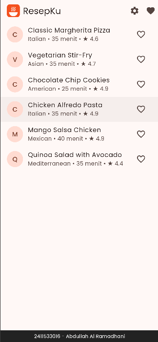
Bagian B — ListView.builder dan Foto Resep
1. Membuat Widget RecipeImage
Buat file baru lib/widgets/recipe_image.dart untuk widget yang menampilkan foto resep dari internet.
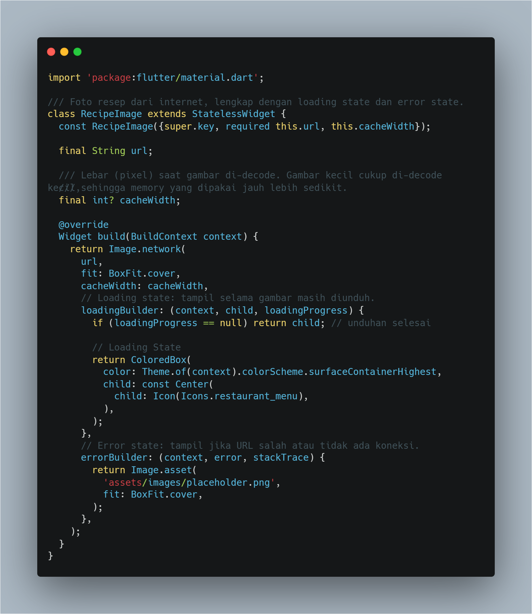
Penjelasan: Kode pada berkas lib/widgets/recipe_image.dart mendefinisikan widget reusable RecipeImage untuk menampilkan foto resep dari internet dengan efisiensi memori melalui pengaturan cacheWidth. Widget ini memanfaatkan loadingBuilder untuk menampilkan kotak berikon saat foto masih diunduh, serta errorBuilder untuk mengganti foto dengan gambar aset placeholder.png apabila gambar gagal dimuat.
2. Thumbnail di RecipeTile
Ganti seluruh isi recipe_tile.dart. Perubahannya hanya pada leading: CircleAvatar diganti foto berukuran 56 × 56 dengan sudut membulat.
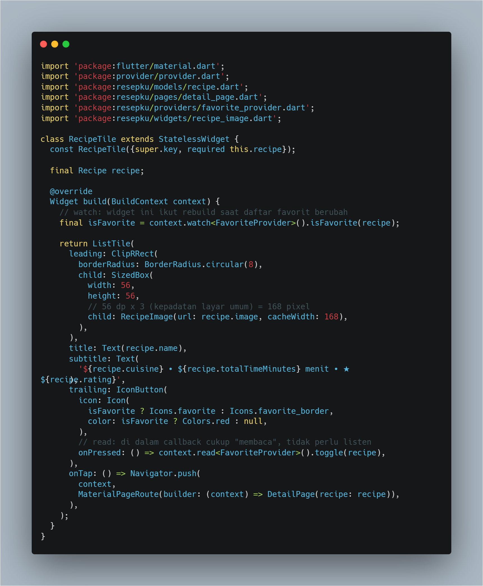
Penjelasan: Code diatas berfungsi untuk memperbarui tampilan tiap baris daftar resep dengan mengganti avatar inisial pada bagian leading menjadi foto thumbnail resep berukuran 56x56 dp bersudut membulat menggunakan ClipRRect dan SizedBox. Foto tersebut dimuat melalui widget RecipeImage dengan parameter cacheWidth: 168 (hasil perkalian lebar 56 dp dengan kepadatan layar standar 3x) agar proses decoding gambar lebih hemat memori. Selain menampilkan judul serta informasi jenis masakan, durasi, dan rating resep, widget ListTile ini tetap mempertahankan integrasi FavoriteProvider untuk memantau dan mengubah status favorit secara langsung maupun membuka DetailPage saat baris diketuk.
3. ListView.builder di HomePage
Ganti seluruh isi home_page.dart dengan versi berikut. body yang sebelumnya ListView(children: [...]) diganti ListView.builder.
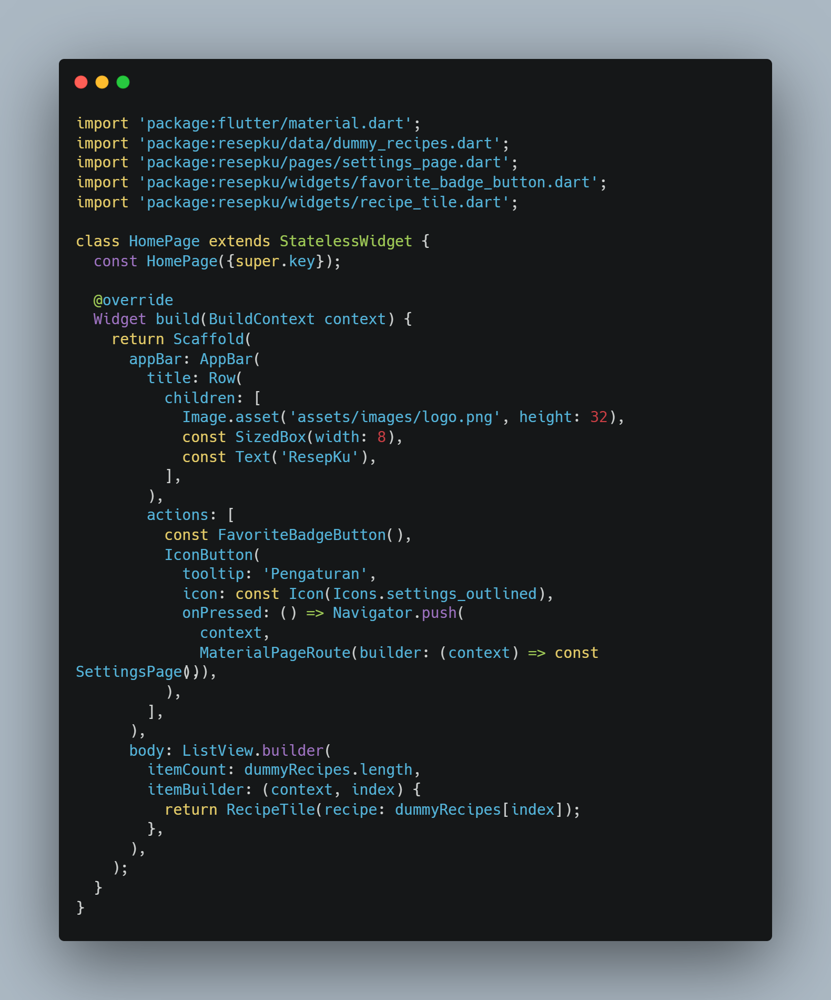
Penjelasan: Code diatas berfungsi untuk menyusun halaman utama aplikasi dengan mengganti daftar statis ListView menjadi ListView.builder agar item resep dirender secara lazy sesuai jumlah data pada dummyRecipes.length. Pada bagian AppBar, kode ini menampilkan logo aplikasi bersanding dengan judul 'ResepKu', serta mempertahankan tombol lencana favorit dan tombol navigasi menuju halaman pengaturan di bagian actions. Sementara itu, setiap indeks di dalam itemBuilder dikembalikan sebagai widget RecipeTile yang sudah menampilkan foto thumbnail resep dari internet.
Checkpoint 2
Tampilan Checkpoint 2 menunjukkan home dengan thumbnail foto resep yang berhasil dimuat dari internet.
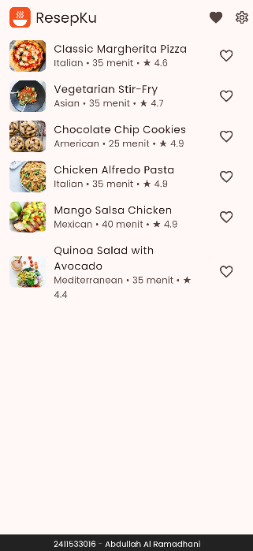
Error state yang menampilkan placeholder ketika gambar gagal dimuat (misalnya saat mode pesawat aktif).
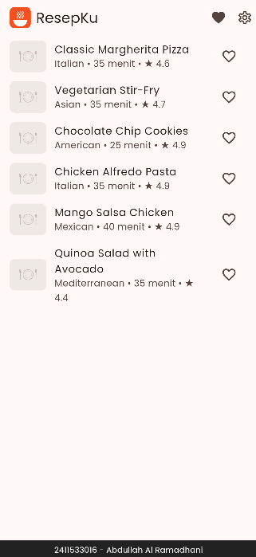
Bagian C — GridView dan Tombol Ganti Tampilan
1. Membuat RecipeGridCard
Buat file baru untuk kartu grid dengan nama recipe_grid_card.dart
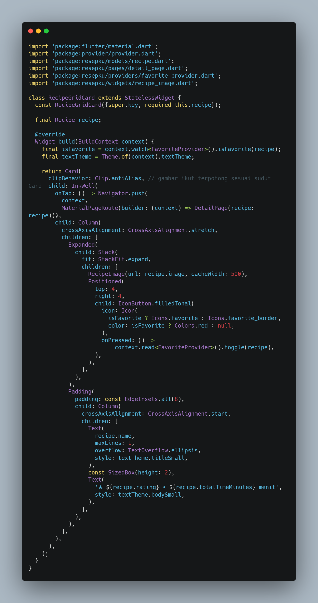
Penjelasan: Code diatas membangun kartu resep untuk tampilan grid menggunakan Card bersudut membulat (Clip.antiAlias) yang dapat diketuk lewat InkWell untuk membuka DetailPage. Bagian atas kartu memanfaatkan Stack untuk menumpuk foto RecipeImage (cacheWidth: 500) dengan tombol favorit melayang di pojok kanan atas (Positioned), sedangkan bagian bawah menampilkan judul resep satu baris (TextOverflow.ellipsis) beserta informasi rating dan durasi memasak.
2. HomePage dengan List dan Grid
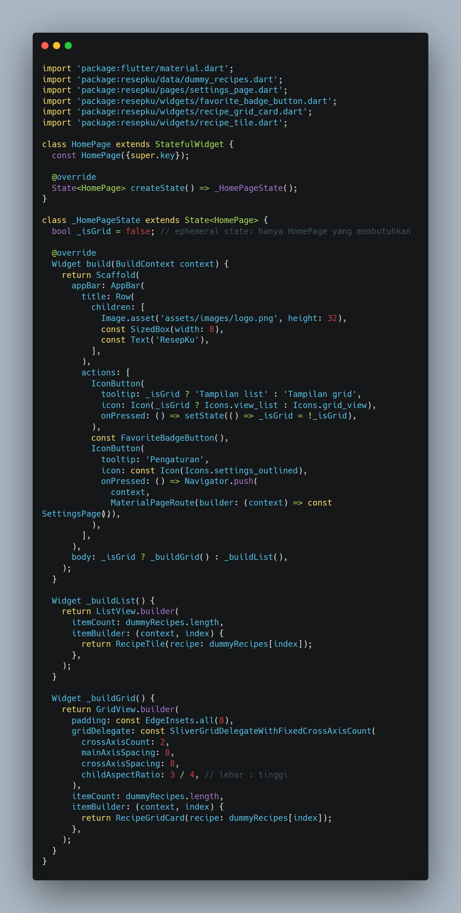
Penjelasan: Code diatas mengubah HomePage menjadi StatefulWidget dengan state lokal _isGrid untuk beralih antara tampilan daftar dan grid melalui tombol ikon pada AppBar. Saat nilai _isGrid bernilai salah, halaman merender daftar vertikal menggunakan ListView.builder dan RecipeTile, sedangkan saat bernilai benar, tampilan berubah menjadi kisi dua kolom menggunakan GridView.builder dengan SliverGridDelegateWithFixedCrossAxisCount dan kartu RecipeGridCard.
3. Menghitung Ukuran Kartu
Perhitungan ukuran kartu grid untuk memastikan tampilan yang optimal pada berbagai ukuran layar.
| Yang dihitung | Hasil |
|---|---|
| Lebar kartu (dp) | (Lebar Layar - Padding - Spacing) / Jumlah Kolom = (360 - 8 - 8 - 8) / 2 = 168 dp |
| Tinggi kartu (dp) | Lebar Item / childAspectRatio = 168 / (3/4) = 224 dp |
Bagian D — Foto di Halaman Detail dan Pengujian
1. Foto Besar di Halaman Detail
Di detail_page.dart, tambahkan import berikut di bagian atas, lalu tambahkan foto sebagai child pertama ListView, tepat setelah baris children: [
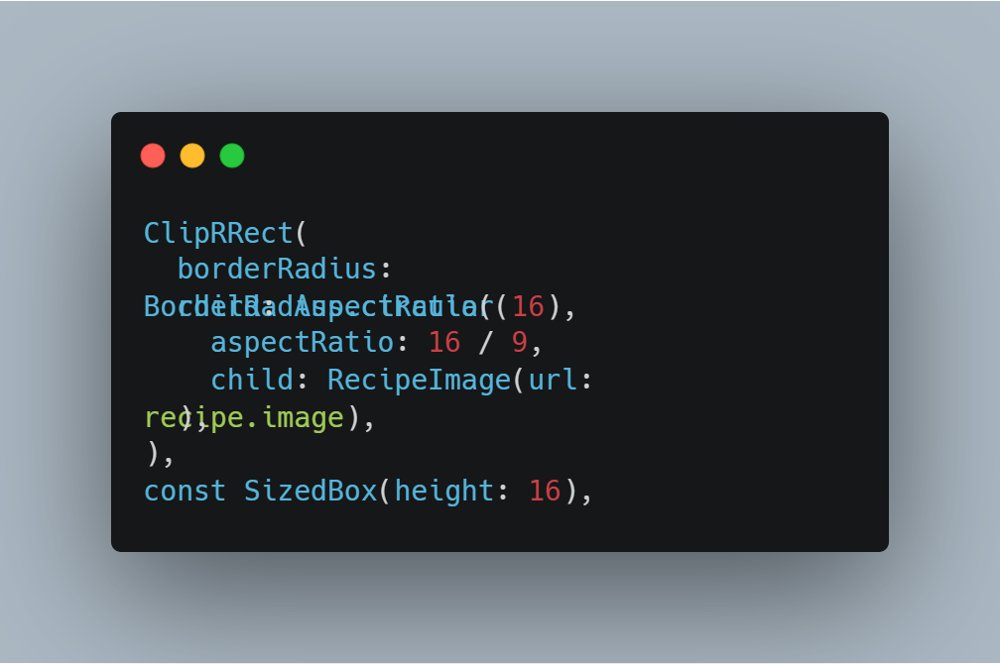
Penjelasan: Code diatas berfungsi untuk menampilkan foto utama resep berukuran besar di bagian paling atas halaman detail. Widget ClipRRect digunakan untuk memotong keempat sudut foto agar membulat dengan radius 16 piksel, sementara AspectRatio menjaga proporsi dimensi gambar tetap konsisten pada rasio 16 banding 9 di berbagai ukuran layar tanpa mengalami distorsi. Foto dimuat menggunakan widget RecipeImage tanpa pembatasan cacheWidth agar kualitas gambar tetap tajam dalam ukuran penuh, lalu diikuti SizedBox setinggi 16 piksel sebagai jarak pemisah sebelum judul resep.
2. Menguji Aplikasi
Jalankan aplikasi dan uji semua fitur yang telah dibuat sesuai dengan tabel skenario pengujian berikut.
| No | Skenario | Hasil yang diharapkan | Sesuai? |
|---|---|---|---|
| 1 | Buka aplikasi | Logo di AppBar, font Poppins, thumbnail foto di setiap resep | ✓ |
| 2 | Tekan tombol grid di AppBar | Resep tampil sebagai kartu dua kolom; ikon tombol berubah menjadi ikon list | ✓ |
| 3 | Di mode grid, tap ikon hati pada Margherita | Ikon merah dan badge bertambah | ✓ |
| 4 | Kembali ke mode list | Ikon hati Margherita tetap merah | ✓ |
| 5 | Tap kartu Alfredo di mode grid | Halaman detail terbuka dengan foto besar di atas | ✓ |
| 6 | Aktifkan mode pesawat, tutup dan buka aplikasi | Gambar placeholder tampil tanpa error merah | ✓ |
Checkpoint 3
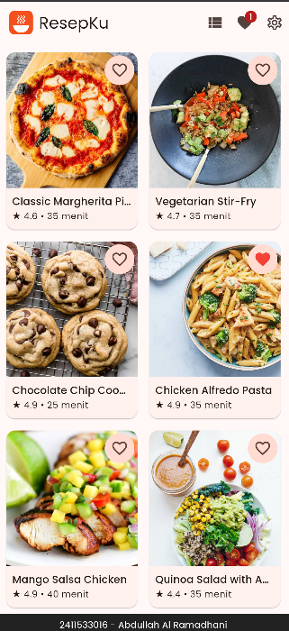
Home dalam mode grid dengan minimal satu resep favorit.
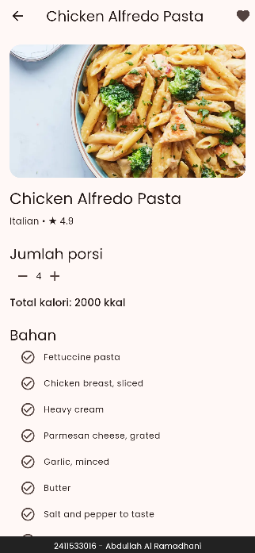
Halaman Detail dengan foto besar di bagian atas.
D. Pertanyaan Reflektif
1. Mengapa status favorit tetap sama meskipun tampilan berganti dari grid ke list, padahal RecipeGridCard dan RecipeTile merupakan widget berbeda?
Jawaban: Status favorit tetap sinkron saat tampilan beralih antara RecipeGridCard dan RecipeTile karena keduanya tidak menyimpan status favorit secara lokal di dalam masing-masing widget, melainkan mengakses sumber data terpusat yang sama melalui FavoriteProvider seperti yang telah diterapkan pada Modul 6. Baik kartu grid maupun baris list memantau perubahan data menggunakan context.watch<FavoriteProvider>() dan mengubah status melalui context.read<FavoriteProvider>(), sehingga ketika widget berganti akibat perubahan state _isGrid, widget yang baru dirender langsung membaca kondisi favorit terakhir dari FavoriteProvider.
2. Apa yang akan tampil jika baris if (loadingProgress == null) return child; dihapus dari loadingBuilder?
Jawaban: Jika baris if (loadingProgress == null) return child; dihapus, foto resep asli tidak akan pernah tampil dan layar akan terus menampilkan kotak abu-abu berisi ikon menu restoran meskipun proses pengunduhan gambar telah selesai. Hal ini terjadi karena fungsi loadingBuilder tetap dipanggil sekali lagi ketika gambar selesai diunduh dengan nilai loadingProgress bernilai null, sehingga tanpa pengecekan tersebut eksekusi kode akan langsung melewati child yang berisi gambar asli dan selalu mengembalikan widget indikator loading di bagian bawah.
3. Berapa pixel foto thumbnail yang di-decode dengan dan tanpa cacheWidth: 168, jika foto asli berukuran 1200 × 800 pixel? Apa akibatnya bagi memory ketika terdapat 50 resep?
Jawaban: Tanpa cacheWidth, foto berukuran 1200 × 800 piksel akan di-decode penuh sebanyak 960.000 piksel per gambar, sedangkan dengan cacheWidth: 168, tinggi gambar ikut disesuaikan secara proporsional menjadi 112 piksel sehingga totalnya hanya 18.816 piksel per gambar atau 51 kali lebih hemat. Ketika jumlah data bertambah menjadi 50 resep, pemuatan tanpa cacheWidth akan memakan sekitar 48.000.000 piksel (setara 183 MB RAM untuk data bitmap mentah) yang berisiko membuat scrolling patah-patah hingga aplikasi crash karena kehabisan memori, sementara dengan cacheWidth: 168 totalnya hanya sekitar 940.800 piksel (3.6 MB RAM) sehingga aplikasi tetap ringan.
4. Mengapa logo menggunakan Image.asset, sedangkan foto resep menggunakan Image.network?
Jawaban: Logo aplikasi merupakan elemen identitas statis berukuran kecil yang harus langsung muncul seketika saat aplikasi dibuka tanpa bergantung pada koneksi internet maupun menampilkan jeda loading, sehingga paling tepat disimpan secara lokal menggunakan Image.asset. Sebaliknya, foto resep bersifat dinamis, jumlahnya terus bertambah mengikuti data dari server, dan memiliki ukuran berkas yang besar, sehingga memuatnya lewat internet dengan Image.network mencegah ukuran berkas instalasi aplikasi membengkak sekaligus memungkinkan pembaruan konten resep tanpa harus merilis ulang versi aplikasi.
E. Latihan
Latihan 1 (wajib) — Filter Cuisine
Tambahkan deretan ChoiceChip di bawah AppBar Home yang dapat digeser ke samping: "Semua" ditambah setiap cuisine yang ada di data. Memilih sebuah chip hanya menampilkan resep dengan cuisine tersebut, baik di mode list maupun grid.
- Tambahkan state String? _cuisine di _HomePageState. Nilai null berarti semua cuisine.
- Ambil daftar cuisine dari data, bukan ditulis manual, misalnya dummyRecipes.map((r) => r.cuisine).toSet().
- Ubah body menjadi Column: deretan chip di dalam SizedBox(height: 56) berisi ListView horizontal, lalu Expanded berisi list atau grid.
- Kirim data yang sudah difilter ke _buildList() dan _buildGrid().
Penjelasan: Pada file lib/pages/home_page.dart, ditambahkan variabel String? _cuisine di dalam _HomePageState untuk menyimpan jenis masakan yang dipilih pengguna, di mana nilai null berarti seluruh resep ditampilkan. Daftar jenis masakan diambil dari dummyRecipes menggunakan .map((r) => r.cuisine).toSet(), lalu ditampilkan sebagai ChoiceChip dalam ListView horizontal yang dibungkus SizedBox(height: 56) di bagian atas Column agar tidak terjadi overflow. Saat pengguna memilih chip, setState() memperbarui nilai _cuisine dan menyaring resep yang dikirim ke widget Expanded berisi _buildList atau _buildGrid, sehingga penyaringan tetap berfungsi pada tampilan daftar maupun kisi.
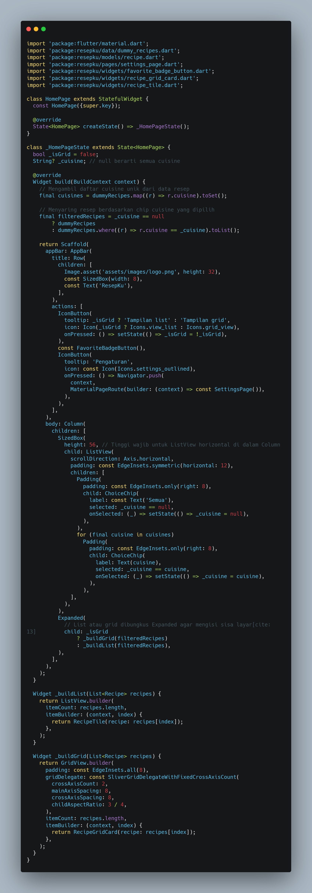
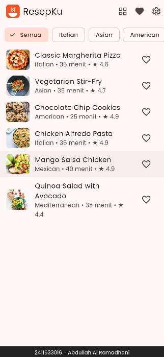
Latihan 2 (wajib) — Halaman Favorit yang Lebih Rapi
Ubah halaman Favorit sehingga:
- memakai ListView.separated dengan Divider di antara item;
- setiap baris menampilkan thumbnail foto memakai RecipeImage;
- item dapat digeser ke kiri untuk menghapusnya dari favorit (Dismissible), disertai SnackBar berisi nama resep yang dihapus.
Dismissible wajib diberi key yang unik dan stabil. Gunakan ValueKey(recipe.id), bukan index. Jika Kalian sudah mengerjakan Latihan 2 Modul 6 (tombol hapus semua), pertahankan tombol tersebut.
Penjelasan: File lib/pages/favorite_page.dart diperbarui dengan mengganti daftar resep favorit yang sebelumnya statis menjadi ListView.separated, lengkap dengan Divider di antara setiap baris agar tampilannya lebih rapi. Setiap item resep juga dilengkapi gambar kecil berukuran 56×56 dp menggunakan widget RecipeImage pada bagian leading dari ListTile. Selain itu, setiap resep dibungkus dengan Dismissible yang memakai ValueKey sebagai kunci unik dan hanya dapat digeser ke kiri. Ketika pengguna menggeser resep untuk menghapusnya dari FavoriteProvider, aplikasi akan menampilkan SnackBar yang berisi nama resep yang dihapus, sementara tombol hapus semua resep favorit pada AppBar tetap tersedia.
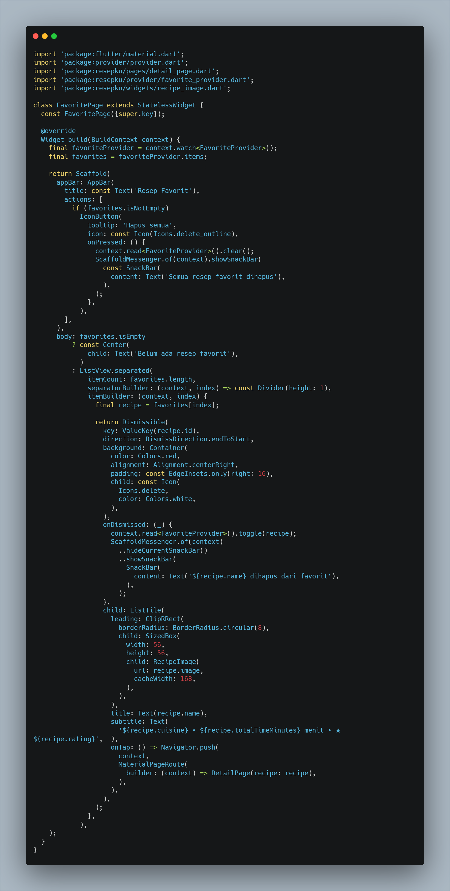
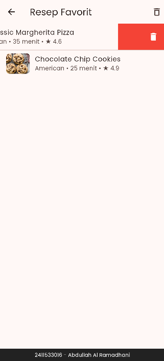
Latihan 3 (bonus) — Foto yang Mengecil Saat di-scroll
Ubah halaman detail menjadi CustomScrollView dengan SliverAppBar (pinned: true, expandedHeight: 260) yang menampilkan foto resep sebagai background FlexibleSpaceBar. Bagian porsi dan judul "Bahan" diletakkan di SliverToBoxAdapter, dan daftar bahan memakai SliverList.builder.
Penjelasan: File lib/pages/detail_page.dart diperbarui dengan mengubah tata letak halaman detail menjadi CustomScrollView yang menggunakan SliverAppBar. Foto resep ditempatkan di dalam FlexibleSpaceBar melalui CachedNetworkImage, sehingga gambar dapat mengecil secara halus saat layar digulir dan tersimpan di cache disk agar tidak diunduh ulang. Informasi kategori resep, kartu pengatur jumlah porsi, total kalori, serta judul "Bahan" diletakkan di dalam SliverToBoxAdapter, sedangkan daftar bahan resep ditampilkan menggunakan SliverList.builder agar proses render lebih efisien.
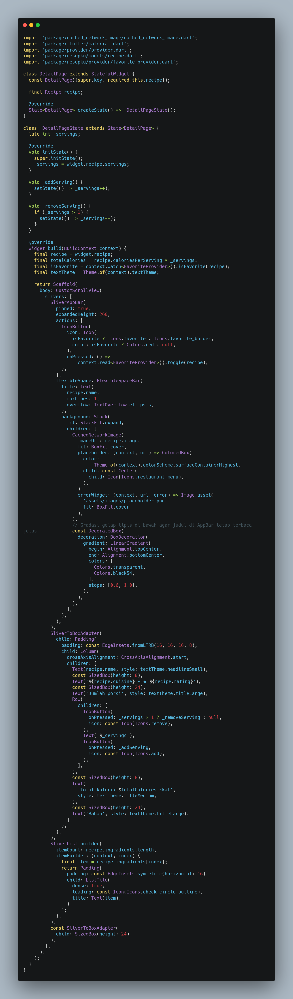
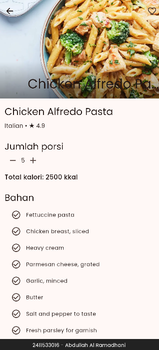
F. Kesimpulan
Berdasarkan rangkaian praktikum Modul 7, seluruh fitur pengelolaan daftar, kisi, gambar, dan aset pada aplikasi ResepKu telah berhasil diterapkan dengan baik. Penggunaan ListView.builder dan GridView.builder membantu aplikasi menampilkan daftar resep secara efisien dalam dua tampilan yang berbeda, yaitu mode daftar dan mode kisi. Status favorit juga tetap tersinkronisasi dengan baik melalui FavoriteProvider. Selain itu, penggunaan RecipeImage dengan loadingBuilder, errorBuilder, serta pengaturan cacheWidth membantu menjaga tampilan aplikasi agar tetap stabil. Fitur ini juga mencegah munculnya pesan kesalahan ketika perangkat tidak terhubung ke internet dan membantu mengurangi penggunaan memori.
Penyempurnaan tampilan melalui latihan mandiri juga berhasil membuat pengalaman pengguna menjadi lebih baik. Penambahan ChoiceChip memudahkan pengguna menyaring resep berdasarkan jenis masakan, baik pada tampilan daftar maupun kisi. Pada halaman favorit, penggunaan ListView.separated dan Dismissible membuat proses menghapus resep terasa lebih mudah dan alami. Ketika resep dihapus, aplikasi juga menampilkan SnackBar sebagai pemberitahuan. Sementara itu, penerapan CustomScrollView, SliverAppBar, dan cached_network_image pada halaman detail membuat foto resep dapat menyusut secara halus saat layar digulir. Gambar juga dimuat lebih cepat karena sudah tersimpan di cache lokal perangkat.